As suggested by the name, sampling rate conversion (SRC) is to change the sampling rate without distorting the signal. There are several purpose to do that. For example, the ADC at the receiver may always working in a certain sampling frequency, while the digital processing block may work in a different frequency. Thus, an SRC block is needed to fill the gap between the ADC and the following digital blocks.
I once worked on a project for a communication chip. The chip belongs to a big family, which shares the same ADC. So that it will be easy to integrate multiple chips into a big one later. However, it also means that you can not choose the ideal ADC clock for each chip. Instead, you choose the one that is 'optimal' for the whole family in certain sense, and use digital SRC to adapt to each chip.
There is a very good description about the sampling rate conversion in this book [1]. Here we shortly describe how it work (refer to the book for more details).
There are two kinds of sampling rate conversation: down-sampling (or decimation) and up-sampling (or interpolation).
1.1 Integral Down-Sampling
Integral down-sampling is not difficult to achieve,
Make sure the signal after down-sampling still meets the Nyquist sampling theorem, that is
$$
F_o = \frac{Fi}{N} > 2B
$$
where $F_i$ is the sampling rate of the input signal, $F_o$ is the sampling rate of the output signal, and $B$ is the signal bandwidth.
Filter the noise before down-sampling.
Otherwise, after down-sampling, the noise between frequency band $\frac{F_i}{N} \sim F_i$ will be folded into the signal band.
Down-sampling the signal, that is, keep one of very $N$ samples after filtering.
The majority of the computational complexity comes from the filtering before the down-sampling. However, if we apply the filtering to all input samples, many filtering output will be useless as they will be discarded in the down-sampling period. So a better solution is to only calculate the filtering output for the samples that survive after the down-sampling. For example, to down-sample the signal by a factor of 3
Fig. 1 shows the structure of the down-sampling process by a factor of 3.
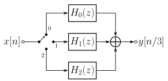
Fig.1. Structure of a poly-phase filter for down-sampling by a factor of 3.
For example,
at time $n=0$, the input $x[0]$ is connected to $H_2$, and its output is added to $y$;
at time $n=1$, the input $x[1]$ is connected to $H_1$, and its output is added to $y$;
at time $n=2$, the input $x[2]$ is connected to $H_0$, and its output is added to $y$;
send $y$ to output as $y[0]$, and reset $y=0$;
at time $n=3$, the input $x[4]$ is connected to $H_2$, and its output is added to $y$;
at time $n=4$, the input $x[5]$ is connected to $H_1$, and its output is added to $y$;
at time $n=5$, the input $x[6]$ is connected to $H_0$, and its output is added to $y$;
send $y$ to output as $y[1]$, and reset $y=0$;
...
1.2 Integral Up-Sampling
Integral up-sampling (e.g., by a factor of $M$, that is $f_o = Mf_i$) is very close to integral down-sampling,
Up-sampling the signal, that is, insert $M-1$ zeros between each two adjacent input samples. For example,
>>># signal parameters>>>f=20e3>>>fs=1e6>>># generage the sinusoid signal>>>s=np.sin(2*np.pi*f/fs*np.arange(1000))>>># plot the signal>>>plt.subplot(2,1,1)>>>plt.plot(np.arange(0,len(s))/fs*1e3,s)>>>plt.xlabel('t(ms)')>>>plt.grid('on',ls='dotted')>>>plt.subplot(2,1,2)>>># plot the frequency response>>>plt.plot(np.linspace(0,fs/1e3,len(s),endpoint=False),20*np.log10(abs(np.fft.fft(s))))>>>plt.xlabel('$f$ (kHz)')>>>plt.ylabel('Magnitude (dB)')>>>plt.grid('on',ls='dotted')>>>plt.tight_layout()>>>plt.show()
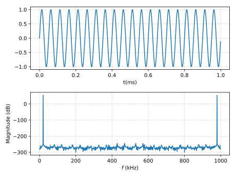
The signal is a sinusoid with frequency 20kHz, which can be seen from its frequency response. The integral up-sampling (e.g., by a factor of 3) is achieved by inserting zeros (e.g., 2 zeros) after each input sample. That is
Eq. (\ref{eqn:up_sampling_3}) shows that $Y(\omega)$ ($0\leq\omega\leq 2\pi$) contains 3 copies of $X(\omega)$ ($0\leq\omega\leq 2\pi$) (compressed in $\omega$ axis), that is
$0\leq\omega\leq 2\pi/3$
$2\pi/3\leq\omega\leq 4\pi/3$
$4\pi/3\leq\omega\leq 2\pi$
>>># the new sampling frequency>>>fo=3*fs>>># up-sampling>>>s3=np.kron(s,[1,0,0])>>># plot the signal after up-sampling>>>plt.subplot(2,1,1)>>>plt.plot(np.arange(0,len(s3))/(fo)*1e3,s3,'.')>>>plt.xlim([0,25/fs*1e3])>>>plt.xlabel('t(ms)')>>>plt.grid('on',ls='dotted')>>>plt.subplot(2,1,2)>>>plt.plot(np.linspace(0,fo/1e3,len(s3),endpoint=False),20*np.log10(abs(np.fft.fft(s3))))>>>plt.xlabel('$f$ (kHz)')>>>plt.ylabel('Magnitude (dB)')>>>plt.grid('on',ls='dotted')>>>plt.tight_layout()>>>plt.show()
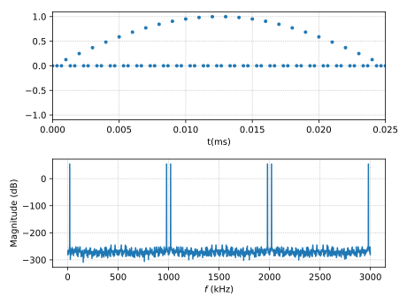
Filter the mirror.
As we see above, after up-sampling, there will be multiple mirror signals within the frequency $[-f_o/2, f_o/2]$.
>>># design a low-pass filter>>>N=21>>>b=scipy.signal.firwin(N,fs/fo)>>># filtering>>>y=3*scipy.signal.lfilter(b,1,s3)>>># plot the signal after filtering>>>plt.subplot(2,1,1)>>>plt.plot(np.arange(0,len(s))/fs*1e3,s,'ro')>>>plt.plot(np.arange(0,len(y)-N/2)/(fo)*1e3,y[N/2:],'.')>>>plt.xlim([0,25/fs*1e3])>>>plt.xlabel('t(ms)')>>>plt.grid('on',ls='dotted')>>>plt.legend(['original signal','up-sampling by a factor of 3'])>>>plt.subplot(2,1,2)>>>plt.plot(np.linspace(0,fo/1e3,len(s3),endpoint=False),20*np.log10(abs(np.fft.fft(y))))>>>plt.xlabel('$f$ (kHz)')>>>plt.ylabel('Magnitude (dB)')>>>plt.grid('on',ls='dotted')>>>plt.tight_layout()>>>plt.show()
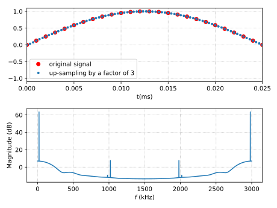
After the filtering, the mirror signal is significantly suppressed. And the filter output follows the original well.
Note that after filtering scipy.signal.lfilter, the output is multiplied by 3. Otherwise, the amplitude of the filter output will be roughly $1/3$ of the original signal. Why? For the above example, the average power of the original signal is $1/2$. Thus, after up-sampling (inserting zeros), the average power becomes $1/2/3=1/6$. Then, at the filtering stage, we filter the mirror signal at frequency 1MHz ($f_s$) and 2MHz ($2f_s$). Thus, the average power after filtering becomes $1/6/3=1/18$. Compared to the original signal, the average power decreases by a factor of 9. Therefore, the filter output is multiplied by 3 to make its average power same as the original signal. In practice, such gain may be embedded in the filter coefficients.
As mentioned before, the filtering procedure will introduce a delay (in the above example, the delay is $(21-1)/2 =10$). When plotting the filter output and the original signal in the same diagram, it may be helpful to remove the delay from the filter.
For the discussion so far, the up-sampling is implemented by inserting zeros after each original signal sample. In some implementation, it may also be achieved by duplicating the original signal sample (it may also be called insert 1). For example
What's the relationship between insert 0 and insert 1 up-sampling? You can implement the insert 1 up-sampling by duplicating the original signal $x[n]$. Or you can filter the output of insert 0 up-sampling with filter coefficients $[1, 1, 1]$ (i.e., all one filter) (convince yourself it is true). In other words, compared to insert 0, insert 1 has an additional low pass filter.
>>># the new sampling frequency>>>s3=scipy.signal.lfilter([1,1,1],1,np.kron(s,[1,0,0]))>>># plot the signal after up-sampling>>>plt.subplot(2,1,1)>>>plt.plot(np.arange(0,len(s3))/(fo)*1e3,s3,'.')>>>plt.xlim([0,25/fs*1e3])>>>plt.xlabel('t(ms)')>>>plt.grid('on',ls='dotted')>>>plt.subplot(2,1,2)>>>plt.plot(np.linspace(0,fo/1e3,len(s3),endpoint=False),20*np.log10(abs(np.fft.fft(s3))))>>>w,h=scipy.signal.freqz([1,1,1])>>>plt.plot(w/np.pi*fo/1e3,20*np.log10(abs(h)))>>>plt.xlabel('$f$ (kHz)')>>>plt.ylabel('Magnitude (dB)')>>>plt.grid('on',ls='dotted')>>>plt.tight_layout()>>>plt.legend(['up-sampling output','filter [1, 1, 1]'])>>>plt.show()
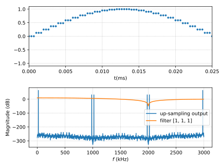
Thus, one potential advantage of insert 1 up-sampling is that it may simplify the following low pass filter (the filter to suppress the mirror). However, as shown in the above diagram, the frequency response of the additional all one filter (e.g., $[1,1,1]$) is not constant. That is, if the signal bandwidth is large, such filter may cause distortion to the signal (e.g., different gain for different frequency components). Thus, insert 1 up-sampling is usually only for narrow-band signal (thus, the frequency response in that narrow band can be viewed as constant). In some implementation, the following low pass filter may also compensate the distortion. For example, its frequency response may not be constant in signal bandwidth, instead, it may be the inverse of corresponding frequency response of the all one filter (e.g., $[1, 1, 1]$). For the following section, we will focus on insert 0 up-sampling.
For the insert 0 up-sampling, during the filtering procedure, many inputs to the filter is zero. There is no need to calculate the multiplications between the filter coefficients and these zero inputs. For example, to up-sample a signal by a factor of 3, the low pass filter to suppress the mirror signal can be split into three sub-filters
It is easy to see that at any time, only one of three sub-filters $H_0(z)$, $H_1(z)$ and $H_2(z)$ outputs non-zero value. Thus, there is no need to calculate the other two sub-filters. It is called poly-phase filter.
Fig.2. Structure of a poly-phase filter for up-sampling by a factor of 3.
For example,
at time $n=0$ (at $f_i$), the input $x[0]$ is connected to $H_0$, $H_1$ and $H_2$, and the output from $H_0$ is sent to output $y[0]$;
at time $n=1/3$, the output from $H_1$ is sent to output $y[1]$;
at time $n=2/3$, the output from $H_2$ is sent to output $y[2]$;
at time $n=1$, the input $x[1]$ is connected to $H_0$, $H_1$ and $H_2$, and the output from $H_0$ is sent to output $y[3]$;
at time $n=4/3$, the output from $H_1$ is sent to output $y[4]$;
at time $n=5/3$, the output from $H_2$ is sent to output $y[5]$;
...
1.3 Fractional SRC
If we want to change the sampling rate by a factor of $\frac{M}{N}$, one straightforward way is
up-sampling the signal by a factor of $M$ (e.g., insert $M-1$ zero after each sample),
low pass filter to suppress the mirror signal,
low pass filter to filter the noise,
down-sampling the signal by a factor of $N$ (e.g., keep one of every $N$ samples).
Obviously, the two low pass filters may be combined together. However, there are still several problems with such scheme
Since there is a down-sampling following immediately the up-sampling, many outputs from the up-sampling are discarded. Thus, it is a waste to calculate such outputs.
If both $M$ and $N$ are large (mutual prime), the inter sampling rate may be too large to be realistic.
Thus, the general idea is to ignore all the calculation for the internal samples that will be discarded in the down-sampling period.
In the following example, we will show how to use the ploy-phase filter to change the sampling frequency of an audio signal from 76kHz to 48kHz. First step, we need to determine the up-sampling and downsampling factors. It is easy to see that $48/76=12/19$. Thus, the input audio signal needs to be up-sampled by a factor of 12, which is further down-sampled by a factor of 19.
It is easy to see that the bandwidth of the audio signal is around 20kHz, so the 48kHz sampling frequency still meets the requirement of sampling theorem (i.e., 48kHz>2*20kHz).
The low pass filter can be designed as
>>># poly-phase filter>>>NF=10#the filter order in fi (e.g.,76kHz) sampling rate>>>flt=scipy.signal.firwin(NF*M+1,1.0/N)>>>delay=(len(flt)-1)/2
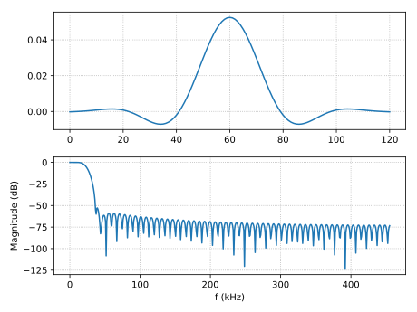
In this example, the filter has a duration of 10 sample intervals at 76kHz sampling frequency. Its passband is around 24kHz to suppress both the mirror signal from up-sampling and the noise that will be folded into the signal band during the down-sampling period.
The naive way looks like
>>># the traditional processing, for later comparison>>># up-sampling by a factor of 12>>>d12=scipy.kron(d,np.concatenate((np.ones([1]),np.zeros([M-1]))))>>># filtering>>>d12f=scipy.signal.lfilter(flt,1,d12)>>># down-sampling by a factor of 19, and compensate for the average power loss from upsampling>>>d48k=d12f[delay::N]*M
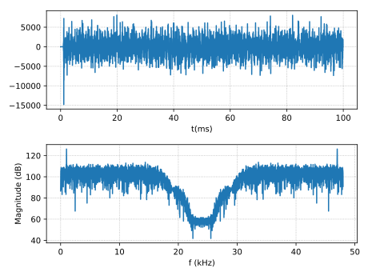
As mentioned before, it is a waste to calculate the samples that will be discarded in the down-sampling process. The poly-phase filter can efficiently ignore such samples. First let's initialize some variables used in the poly-phase filtering.
>>># only saving the right half coefficients, since it is symmetric>>>fltp=flt[delay:]>>># append zeros to avoid index overflow>>>fltp=np.hstack((fltp,np.zeros((M))))>>># allocate the memory for poly-phase filtering>>>d48kp=np.zeros((np.ceil(len(d)/N*M).astype(int)))>>># initialization>>># alpha is the # of samples (@ 76k*M Hz) since last output sample (@76k*M/N Hz)>>># for each input (@76kHz Hz), alpha += M, since @76k*M, it is equivalent to>>># have 1 input sample and M-1 zero samples.>>># if alpha >= N, it means there are at least N samples since the last output.>>># Thus, it needs to output one sample, and alpha-N is the phase. Then alpha>>># needs to be updated as alpha -= N.>>>alpha=N-M# so we want to keep the first input sample>>># delay line for input at 76kHz>>>bufIn=np.zeros(NF+1)>>>foriinrange(0,NF/2):...bufIn[NF/2-i-1]=d[i]
Here we define $\alpha$ as the number of samples (at 76k*12 Hz) 'received' since last output sample (at 48k Hz). In the above example, $N=19$, thus, the sample corresponding to $\alpha=N$ will be kept and sent to the output. All the samples corresponding to other $\alpha$ values will be discarded.
With $\alpha$ defined, there is no need to actually generate the up-sampled sequence (i.e., insert 0). For each original input sample $x[n]$ (at 76kHz Hz), after up-sampling, the filtering block will receive $x[n]$ and $M-1$ zeros. Thus, $\alpha$ should be updated as $\alpha \mathrel{+}= M$. In other words, 12 additional samples are received from the up-sampling block. If $\alpha >= N$, it means there are at least $N$ samples since the last output. Thus, it needs to output one sample, and $\alpha-N$ is the phase. Then $\alpha$ needs to be updated as $\alpha \mathrel{-}= N$. We will show the procedure with an example shortly.
As we know, to filter the signal, we need to use a delay line to store the signals (same length as the filter, e.g., 121 in above example) as shown in Fig. 3. Since the filter is applied after up-sampling (insert 0), most signals in the delay line are zeros. Thus, there is no need to store them. Thus only the signals from the original input are needed to be stored (e.g., $d[0] \sim d[10]$).
As shown above, the designed filter has a duration of 10 samples at the sampling frequency of original input (76kHz). However, the delay line should have room for 11 samples as shown in Fig. 3. You will see why shortly.
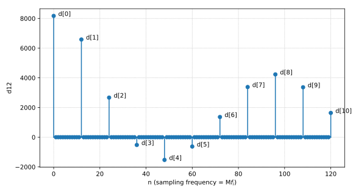
Fig.3. Signal after up-sampling (insert 0)
Let's assume at this time, $\alpha = N$ (Fig. 4). Since $\alpha>=N$ ($\delta = \alpha-N=0$), we need to output one sample. What does the $\alpha=N$ (or $\delta =0$) really mean? In our case, it actually means there are $N$ input samples since the last output, and to calculate the output the center filter coefficient aligns with the center of the delay line (e.g., $n=60$ or $d[5]$) as shown in Fig. 4.
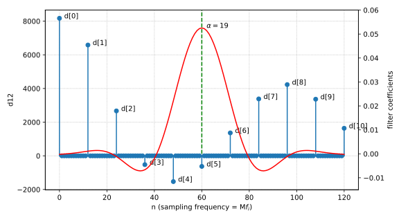
Fig.4. $\alpha=N$ means the center filter coefficient aligns with the center of the delay line (i.e., $n=60$ or $d[5]$).
Since most input signals are zeros, the corresponding multiplications can be ignored. As shown in Fig. 5, we only need to calculate the multiplications between the filter coefficients (indicated by the green square) with the corresponding original signals (indicated by blue circles) (i.e., $d[0]\sim d[11]$).
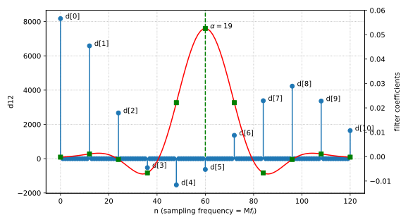
Fig.5. $\alpha=0$ means the center filter coefficient aligns with $d[4]$.
After calculating the filter output, the last thing is to
update the last output time to $d[5]$ as indicated by the red dash line in Fig. 6;
update $\alpha = \alpha-19 = 0$.
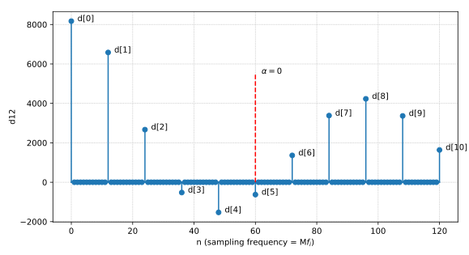
Fig.6. $\alpha=0$ means the center filter coefficient aligns with $d[4]$.
Now, we have finished the current sample. There is no need to do anything until new original sample $d[11]$ arrives. Fig. 7 tells us a lot of things.
The new sample from the original signal (i.e., $d[11]$) enters the delay line, while $d[0]$ is discarded.
The red dash line indicates the time of the last output as mentioned above;
The green dash line is the current time as usual;
Update the distance between the current time and the last output. Since each original sample (at $f_i$) is equivalent to 12 samples at $Mf_i$, thus $\alpha= \alpha + 12 = 12$ (that is there are 12 samples between the green and red dash lines);
Since $\alpha=12 \lt 19$, there is no need to calculate filter output.
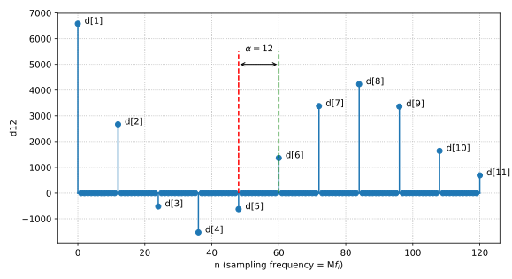
Fig.7. New sample ($d[11]$) arrives.
We have finished all the calculation for receiving $d[11]$ and wait for the next original sample (i.e., $d[12]$). Fig. 8 shows the delay line status after receiving $d[12]$
$\alpha=\alpha + 12 = 24$ (24 samples between the green and red dash lines);
Since $\alpha=24 \gt 19$, it needs to calculate the filter output.
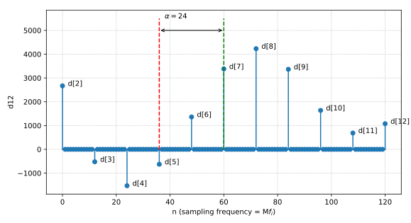
Fig.8. Delay line and $\alpha$ after sample ($d[12]$) arrives.
Where should we align the filter coefficient with delay line? To answer this question, we need to find the position which is corresponding to 19 samples delay since the last output (remember the last output is at the position indicated by the red line, and the next output is 19 samples away.). As shown in Fig. 9, since there are $\alpha=24$ samples between the last output (indicated by red dash line ) and the current center sample in delay line (indicated by green dash line), the position corresponding to 19 samples delay sits between them, as indicated by the blue dash line. In particular, the distance between the blue dash line and the green dash line is $\delta = \alpha -19 = 5$. Thus, the center filter coefficients should align with the blue line. Again, there is no need to calculate the multiplications between the zero inputs and the filter coefficients. In other words, we only need to calculate the multiplications between the original samples (e.g., $d[2]\sim d[11$) and the corresponding coefficients (indicated by green squares).
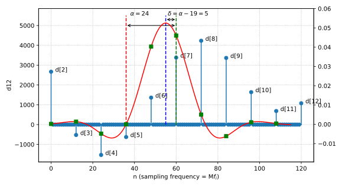
Fig.9. Filtering after sample ($d[12]$) arrives.
After the calculation, we need to update the position of the last output and $\alpha$. Obviously, the position indicated by the blue dash line in Fig. 9 becomes the last output position. Correspondingly, the $\alpha=\alpha-19 = 5$ (Fig. 10).
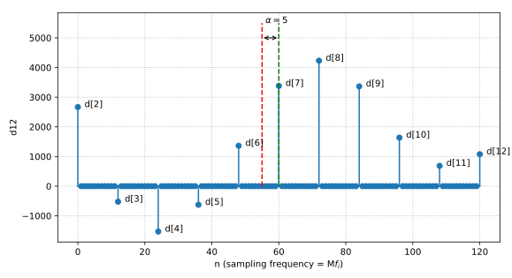
Fig.10. $\alpha$ after the filtering when sample ($d[12]$) arrives.
We repeat the above process for all the following input samples. Although it looks complicated, the code for filtering is very short.
>>>idx48k=0>>>foriinrange(NF/2,len(d)):...# shift in one data...bufIn=np.roll(bufIn,1)...bufIn[0]=d[i]...# update the alpha...alpha=alpha+M...# need output?...ifalpha>=N:...delta=alpha-N...output=0...# left side...forkinrange(0,NF/2+1):...output=output+fltp[delta+k*M]*bufIn[NF/2-k]...# right side...delta2=M-delta...forkinrange(0,NF/2):...output=output+fltp[delta2+k*M]*bufIn[NF/2+1+k]...# output...d48kp[idx48k]=output...idx48k+=1...alpha-=N>>>#amplitude compensation for up-sampling by a factor of 12>>>d48kp=d48kp*M
One thing to note is that since the filter coefficients are symmetric, we only need to store roughly half filter coefficients. Then, we need to process the data at the right and left sides of the center filter coefficients slightly differently.
As shown above, for some outputs (e.g., Fig. 5), it needs to calculate 11 multiplications, while for some outputs (e.g., Fig. 9), it only needs to calculated 10 multiplications (the filter coefficient for $d[12]$ is zero). For simplicity, in the above code, we append $M$ zeros to the filter coefficients, and always calculate 11 multiplications.
Fig. 11 shows that the results from the poly-phase filtering and the naive filtering are exactly same.
>>>plt.clf()>>>plt.plot(np.arange(0,len(d48k))/fo*1e3,d48k-d48kp[:len(d48k)])>>>plt.xlabel('t (ms)')>>>plt.ylabel('diff between classical and poly-phase filtering')>>>plt.grid('on',ls='dotted')>>>plt.show()
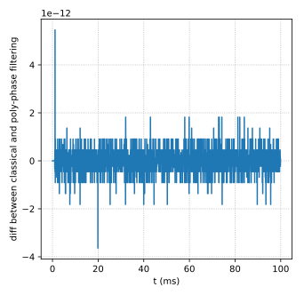
Fig.11. Difference between the naive filting and the poly-phase filtering.
Case $M>N$. So far, we discuss the case $M<N$. In this case, for each original input (at $f_i$), there is zero or one output sample (at $Mf_i/N$). How about $M>N$? It simply means for each original input (at $f_i$), there are one or more output samples (at $Mf_i/N$). For example, for case $M=12$, $N=5$ and $\alpha=0$, when next original arrive, $\alpha = \alpha + 12 = 12$, it needs to calculate two outputs $\delta_1 = \alpha - 5 = 7$ and $\delta_2 = \alpha - 10 = 2$, as show in Fig. 12.
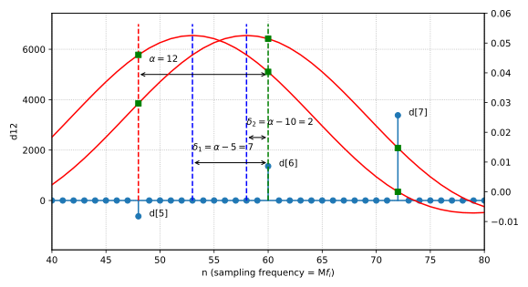
Fig.12. Two outputs (at $Mf_i/N$) for single input (at $f_i$)).
Filter coefficients interpolation. For the above example, $M=12$, which is not very large so that we can generate the filter coefficients at the exact internal sampling frequency $Mf_i$. However, if $M$ is very large (e.g., $100$), it may waste a lot of space to store the filter coefficients at relatively high internal sampling frequency ($Mf_i$) as the adjacent coefficients are very close to each other. Instead, we may design and store the filter coefficients at at lower sampling frequency (e.g., $16f_i$). In this case, when calculating the multiplication, there may be no exact filter coefficients (in other words, there are 100 possible filter phases while the stored filter only has 16 phases). For example, as shown in Fig. 13, there is no exact filter coefficient available for $d[5]$. However, we know its corresponding filter coefficient is between $f[18]$ and $f[19]$. Thus, we may use interpolation to get the approximation, e.g., with linear regression $(2f[18] + f[19])/3$.
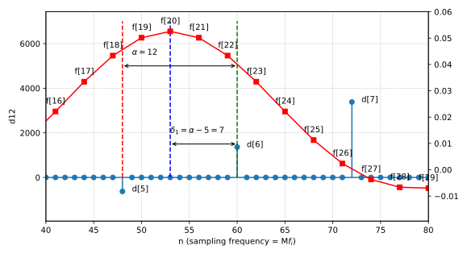
Fig.13. Illustration of filter coefficient interpolation.
Richard G. Lyons, "Understanding Digital Signal Processing", Pearson Education; 3rd edition (November 11, 2010) ↩